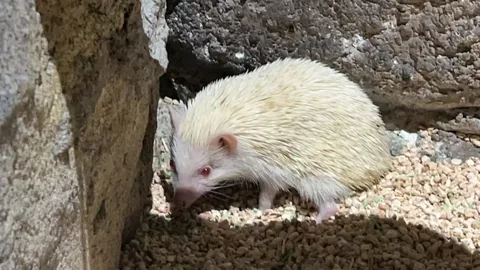
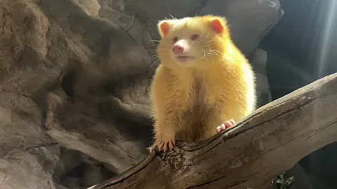

照片
六张照片都拍于 2024年4月5日，设备是 iPhone 13 Pro。场景都是室内展区，隔着玻璃或围栏。点击任意一张可以放大，按 Esc 或「关闭」返回；也可以用底部按钮或方向键前后翻看。
每张照片为本人拍摄。下面写的是拍摄时的问题和取舍，不是后期修出来的效果。
照片列表

贴着玻璃拍，把底边那道金属框留在画面下缘——它是「隔着看」的证据，不是该裁掉的杂物。

侧光把木墙的裂缝照出来，两只鸟一灰一黄，刚好分出前后层次。

水珠和反光消不掉，就把它们压到画面边缘，让眼睛成为唯一清楚的地方。

顶光下压低曝光，饲料堆的亮部反而衬出了刺猬的浅色毛。

等射灯扫到背上那一秒才按快门，深灰岩壁把白毛衬成了主体。
墙洞里两头猪朝向一致，粉色鼻头是画面里唯一的暖色。